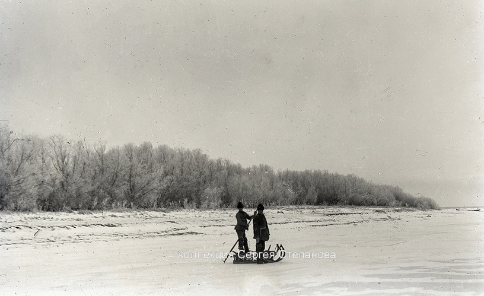

КАК НОВЫЙ ГОД В АСТРАХАНИ ВСТРЕЧАЛИ В ПРОШЛЫХ ВЕКАХ

История Нового года в Астрахани
Время идет, а традиции не меняются? Иногда кажется, что елка, Женя
Лукашин и салат оливье всегда были с нами в Новый год. Изучаем
зимние праздники в Астрахани и ищем совпадения с современными
реалиями. Редакция Астрахань.ру обратилась за развернутым
комментарием в Отдел краеведческой литературы Астраханской областной
научной библиотеки им. Н. К. Крупской, сотрудники которого любезно
согласились осветить историю праздников в регионе на основании
изданий из фонда учреждения и архивных материалов.
Традицию украшать елки и прочую хвойную растительность на Руси
устанавливает Петр I. Как известно, по его приказу Новый год
начинают отмечать 1 января, а не 1 сентября, как раньше. После
смерти первого российского императора новогодние елки временно
исчезают, а снова появляются уже при правлении Николая I в первой
половине XIX века. Возвращению елок поспособствовала жена императора
Александра Федоровна. Во время новогодних торжеств она упросила
своего мужа поставить на праздничный стол маленькую елочку, что и
было сделано. Подданные были в восторге – уже на следующий новый год
во всех домах знати стали наряжать «зеленых красавиц». Постепенно
елки появились и у простых горожан. Информации о традициях встречи
Нового года и Рождества в Астраханской губернии сохранилось немного.
Известно, что люди с нетерпением ждали этих праздников. Магазины
украшали свои витрины хвойными деревьями и дорогими лакомствами. На
Калмыцком базаре по инициативе попечителя устраивали елку для детей.
Праздничное дерево украсили игрушками, золочеными орехами,
пряниками, конфетами. Вечером на ней зажгли свечи, и дети были в
восторге. Вокруг елки шли гуляния – игры и танцы. Кутум был также
местом отдыха и развлечений. Здесь часто устраивались катания на
санях, коньках и чунках. Да и на других водоемах тоже. Впрочем, как
и в советскую эпоху.
Маскарады и балы в Астрахани
Накануне 1839 года был дан маскарад в здании Благородного Собрания.
Дворянство Астрахани и почетные гости съезжались в дом Собрания к
22:00. Бал открывал губернатор. Начались танцы, живые вальсы
сменялись чинными французскими кадрилями. Ровно в полночь оркестр
провозгласил наступление Нового года величественным народным гимном
«Боже царя храни!» Гости заполнили бокалы шампанским, начались
взаимные поздравления с Новым годом.